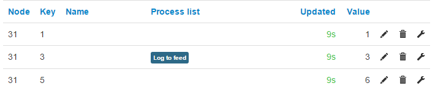
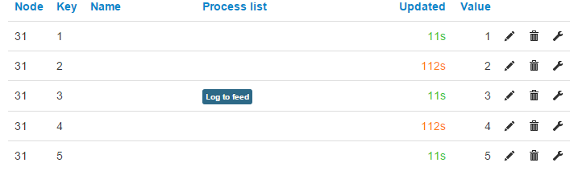

I'm having some trouble getting the emoncms input api to work correctly and suspect some changes have broken something along the way.
Around a year ago for v8.3.5, I submitted a change to allow values to be omitted so that individual inputs could be updated using the bulk api. for example if a node has 5 inputs and you only want to update 2 and 4 submitting a data string of "null,123,null.123,null" would update 2 and 4 to "123" while 1,3 and 5 would not be updated, this was obvious to confirm as the "last updated" column on the inputs page would not be refreshed and it was very common to see a range of times in green and orange for any node updated this way.
This no longer works! and I'm unsure why, the code changes I made are still present through to v9.x and as far as I'm aware emoncms.org hasn't been updated (other than dash and viz parts)
So far only tested on emoncms.org as I don't currently have a local instance to test it on.
Could someone try this url out on a local install (by replacing the .org url with local url and please change node id if 31 is in use)
http://emoncms.org/input/bulk.json?data=[[0,31,1,null,3,null,5]]&sentat=time()
it should (and previously did) result in node 31 input 1,3 &5, being updated to 1,3 & 5 respectively (if logged in add "&apikey=abc123etc" otherwise), each time it is refreshed the "last updated" for 1,3&5 should get renewed while 2 and 4 should just get longer/older.
Maybe a emoncms or php dev could shed some light on the issue?
I have tried all the possible keywords (null nan none etc in lower, upper and camel case) but I was aware previously only "null" would work (without quotes) eg
null
false
""
"null"
"nan"
" " (changes in browser bar to "%20")
"None"
AND "SomeBogusText" !!!!
all result in the absent values being updated as 0 and
nan
Null
Nan
NULL
NAN
None
all prevent any of the inputs being updated at all.
I have found this Best practise for bulk upload thread that confirms it was working in April but not in September.
Any help or thoughts welcome.
Paul
Re: emoncms input api issue
Can anyone who has used the selectable input api (or been unable to) confirm if/when it worked, please ?
It would also be really appreciated if some helpful soul(s) could just try it locally to help me narrow the search. It will create one input which can be easily deleted again.
I would rather not have to install emoncms just now to test one url and find it works on local installs and just not emoncms.org since it is a customized version which (obviously) I cannot access for debugging.
Normally I would suspect it didn't survive the V8.5+ and ongoing changes, but since emoncms.org is running a version that pre-dates all those changes it seems unlikely.
Paul
Re: emoncms input api issue
It doesn't seem to like 'nan'!
Error: Format error, json string supplied is not valid
If I replace nan with null that works, and I get 1 input node with 3 keys - 1,3 & 5.
Paul
Raspberry Pi v2, Wheezy, emoncms v9.1 - 2015. 11. 02
Re: emoncms input api issue
Ooops! My apologies, confused myself when writing out the test url, "nan" shouldn't and never did work (see lists) that should be "null" not "nan". Thanks for trying it, would it be too much to ask you to try again using
"http://emoncms.org/input/bulk.json?data=[[0,31,1,null,3,null,5]]&sentat=time()"
edited to fit as per the first time?
Paul
ps i've now fixed the original
EDIT - Cheers Paul - just seen your edit after my edit that is the expected output AND if you haven't deleted it yet could you try same url but repalce one more value with another "null" and see if that input retains the older "updated at" entry?
Re: emoncms input api issue
See previous post (which I edited a few moments ago)
Re: emoncms input api issue
Cheers Paul sorry for the post clashing, I was about to walk out the front door when I saw your post so I was rushing a bit. did you see my last edit? if it's not too late.
Paul
Re: emoncms input api issue
for example
"http://emoncms.org/input/bulk.json?data=[[0,31,11,null,null,null,55]]&sentat=time()"
should update 1 and 5 to "11" and "55"while 3's value should remain at "3" and the "updated at" column should be orange and say n Minutes while 1 & 5 go green and say n Seconds.
This is good news it looks like a "emoncms.org" only issue :-)
I will suggest an addition to the api help page to include this since Chaverio has kindly updated it so users are aware of it.
Anyway thanks again, must dash !!
Paul
Re: emoncms input api issue
It does not create 2 & 4, as you probably expect.

but if I post - data=[[0,31,1,2,3,4,5]]&sentat=time()
and then a few moments later - data=[[0,31,1,null,3,null,5]]&sentat=time()
I get;

So yes you are correct.
Paul
Re: emoncms input api issue
Many thanks Paul! That's good news.
Hopefully Trystan can pick this up and take a look at emoncms.org.
Paul